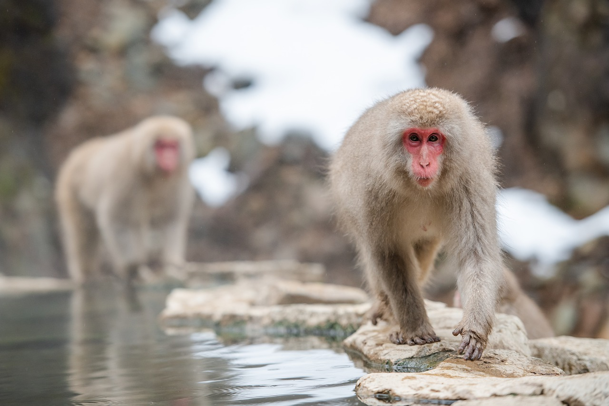
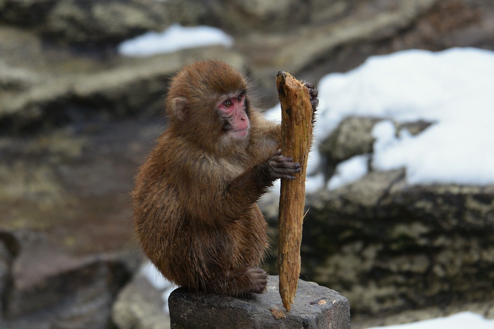

1.分類
学名︰Macaca fuscata
哺乳綱霊長目オナガザル科マカク属に分類される霊長類。
欧米諸国ではサル類が生息しないため、いわゆる先進諸国で野生のサル類が国内に生息する日本とニホンザルは特別視されてきた。ニホンザルのことを英語で Snow Monkey と呼ぶのは、サルが熱帯の動物と考えられていたためである。
2.身体的特徴
東北地方や中部地方山岳部の個体群は、西日本の個体群よりも大型。体毛は寒冷地では長く密に被われ、温暖地では短く薄く被われる傾向がある。背面の毛衣は赤褐色や褐色、腹面の毛衣は灰色。顔や尻は裸出し、赤い。
頭胴長（体長）オス53～60センチメートル、メス47～55センチメートル。尾長オス7～11センチメートル、メス6～11センチメートル。体重オス6～18キログラム、メス6～14キログラム
3.生態的特徴
幸島の個体群では、餌のサツマイモを海水で洗って食べる行動が報告されている。群れの他のものにもそれをまねするものが現れた。海水で洗い、食べるごとに海水に浸し味付けをするらしい行動をする個体もいる。
群れは母系集団で、オスは生後3～8年で産まれた群れから独立し近くにある別の群れに入ったり遠距離移動を行うと推定されている。群れは「仲間意識」によって支えられた集団であるとしている。群れ内に「ボス」や「決まった順位」があると見えるのは、人間による餌付け（決められた場所、時間、量のサツマイモや大豆などの給餌による飼いならし）という餌の独り占めが現れやすい特殊な状態下だからだ、という見解である。
4.食性／繁殖
食性
主に果実を食べるが、植物の葉、花、種子、キノコ、卵、昆虫なども食べる。京都府の嵐山では、192種の食物を食べていたという報告例がある。亜種ヤクシマザルは、カエルやトカゲも食べた例もある。下北半島の個体群は食物が少ない時期に樹皮、海藻、貝類なども食べる。
繁殖
繁殖様式は胎生。主に秋季から冬季にかけて交尾を行う。妊娠期間は161～186日。この時期以外にメスが発情期に発情することは少なく、月経もまれ（月経があっても無排卵月経）。春季から夏季に1回に1頭（まれに2頭）の幼獣をに1回産む。
5.生息分布
日本（本州、四国、九州および周辺の島嶼、屋久島）。種子島、茨城県では絶滅。ヒトを除いた霊長目の現生種では、最も北（下北半島）まで分布する。
6.起源／歴史
日本語「猿（さる）」は、元来ニホンザルを指して使われた呼び名であった。 異称は「ましら」で、和歌などでは盛んに使われる。南方熊楠によればこれは梵語に由来するものかという。また俗に「エテ公」などとも言うが、これは一種の忌み言葉で、猿が「去る」に通じるのを避けて「得手」と呼んだことが起源とされる。
猿は古来“山神”とされた。 猿は他の獣とは違って人の異形にして縮小態であり、それゆえに、山神の使者、あるいは神そのものとされたのも自然な成り行きであった。 南方によれば、田畑を荒らされるのを防ぐために猿に餌をやったことが、かえって猿は田畑の守り神であると認知させることになったのだという。